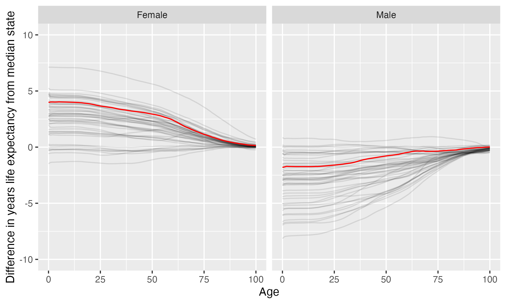

University of Maine at Presque Isle
University of Maine at Presque Isle is located in Presque Isle, Maine. It is a public, 4-year or above institution.
From Wikipedia: The University of Maine at Presque Isle (UMaine Presque Isle or UMPI) is a public college in Presque Isle, Maine. It is part of the University of Maine System and one of two University of Maine System schools in Aroostook County (the other being the University of Maine at Fort Kent).
Notes
These are items that bear looking into more closely.
- This institution’s total assets have tended to decrease over time.
Overview of institution
Institution kind: Baccalaureate Colleges: Diverse Fields
Undergrad program: Professions plus arts & sciences, no graduate coexistence
Graduate program: Not classified (Exclusively Undergraduate)
Enrollment profile: Exclusively undergraduate four-year (see more details below)
Average net price for undergrads on financial aid: $9,190 (This is 70% the average cost of Harvard).
Average net price for families with $30K-48K income: $7,678 (This is $6,282 more expensive than what Harvard costs for equivalent students).
Actual price for your family: Go here to see what your family may be asked to pay. It can be MUCH lower than the average price but also higher for some.
Size and setting: Four-year, very small, primarily residential
In state percentage: 82.1% of first year students come from Maine
In US percentage: 96.3% of first year students come from the US (note that 0.0% have no residence reported)
Graduation rate (within 6 years) for students seeking a Bachelors: 35.8% (this is what is usually reported as “graduation rate”)
Graduation rate (within 4 years) for students seeking a Bachelors: 24.4%
Percent of students seeking a Bachelors who transfer out of this institution: 28.4%
Student to tenure-stream faculty ratio: 22.3 (undergrads to tenure-stream faculty) [Tenure explained]
Student to faculty ratio: 21.6 (undergrads to all faculty)
Degrees offered: Certificate of less than 1 year, Certificate of at least 12 weeks but less than 1 year, Associate’s degree, Bachelor’s degree, Master’s degree
Schedule: Semester
Institution provides on campus housing: Yes
Dorm capacity: There are enough dorm beds for 332 students
Freshmen required to live on campus: No
Meal plan: Yes, number of meals in the maximum meal plan offered
Covid vaccination requirement for students: At some point during the pandemic (this may have changed), this institution required students to be vaccinated against covid (based on info from here)
Covid vaccination requirement for faculty/staff: At some point during the pandemic (this may have changed), this institution required faculty and/or staff to be vaccinated against covid (based on info from here)
Advanced placement (AP) credits used: Yes
Disabilities: 14 percent of undergrads are registered as having disabilities.
Overview of location
- Abortion in this state: Protective (based on https://states.guttmacher.org/policies/ as of May 10, 2023)
- Gun law stringency: F (higher grade = more stringent)
- State rep support for contraception: 100% of US reps from this state voted in favor of legal protections for contraception.
- State rep support for recognizing same-sex and interracial marriage: 100% of US reps from this state voted in favor of requiring states to recognize same-sex and interracial marriages performed in other states
- Anti-trans legislative risk: Low risk (based on Erin Reed’s work, as of June 25, 2023)
- Ecological region: New England-Acadian forests
- Biome: Temperate Broadleaf & Mixed Forests
- Distance to mountains: 20 miles to Appalachian Mountains
- Climate: See overview at WeatherSpark
Similar institutions
This is using information about school size, acceptance rate, yield rate, graduation rate, cost, athletic conference, and similar metrics, but it can miss important axes of similarity (for example, culinary versus hair styling schools).
Map
Enrollment
| University of Maine at Presque Isle | Change over ≤ 11 years | Trend | North Atlantic Conference | Baccalaureate Colleges: Diverse Fields | |
|---|---|---|---|---|---|
| Undergrads (full time) | 774 (2021) |

|
|||
| Undergrads (part time) | 799 (2021) |

|
↑ 32 per year |
||
| Grad students (full time) | 9 (2021) |

|
|||
| Grad students (part time) | 8 (2021) |

|
|||
| Admission rate (undergrads) | 100% (2021) |

|
|||
| Yield rate (percent of applicants offered undergraduate admission who accept) | 20% (2021) |

|
✪✪✪ Better (higher) than 50% |
✪✪ Better (higher) than 33% |
|
| Graduation rate (bachelors in 6 years) | 36% (2021) |

|
✪ Better (higher) than 8% |
✪✪ Better (higher) than 37% |
|
| Transfer out rate (bachelors) | 28% (2021) |

|
✪✪ Better (lower) than 30% |
✪✪✪ Better (lower) than 52% |
Student financing
At many universities, almost no students pay the listed tuition and fees (“sticker price”): instead, their financial aid package lowers this dramatically, but how much students pay can vary substantially based on family income and other factors. The tuition below is the average across many students receiving aid: your family may be asked to pay less or more than this.
| University of Maine at Presque Isle | Change over ≤ 11 years | North Atlantic Conference | Baccalaureate Colleges: Diverse Fields | |
|---|---|---|---|---|
| Average net price (for students awarded aid) | $9,190 (2020) |

|
✪✪✪✪✪ Better (lower) than 100% |
✪✪✪✪✪ Better (lower) than 91% |
| Undergrads getting federal aid | 94% (2021) |

|
✪✪✪✪✪ Better (higher) than 100% |
✪✪✪✪✪ Better (higher) than 89% |
| Undergrads getting any aid | 94% (2021) |

|
✪✪ Better (higher) than 38% |
✪✪ Better (higher) than 26% |
| Undergrads getting Pell grants | 52% (2021) |

|
✪✪✪✪ Better (higher) than 69% |
✪✪✪ Better (higher) than 53% |
Teaching
| University of Maine at Presque Isle | Change over ≤ 11 years | Trend | North Atlantic Conference | Baccalaureate Colleges: Diverse Fields | |
|---|---|---|---|---|---|
| Undergrads per tenure track instructor (lower is better) | 22 (2020) |

|
↑ 0.5 per year |
✪✪ Better (lower) than 25% |
✪✪✪ Better (lower) than 49% |
| Undergrads per instructor (lower is better) | 22 (2020) |

|
↑ 0.8 per year |
✪ Better (lower) than 10% |
✪✪ Better (lower) than 23% |
| Total instructors | 33 (2020) |

|
↓ -2.0 per year |
||
| Tenure track instructors | 32 (2020) |

|
↓ -0.9 per year |
||
| Non-tenure track instructors | 1 (2020) |

|
↓ -1.1 per year |
Student details
| University of Maine at Presque Isle | Change over ≤ 11 years | |
|---|---|---|
| Dorm capacity | 332 (2021) |

|
| Percent of undergrads with registered disabilities (≤3 is rounded up to 3) | 14% (2021) |

|
Institution finances
| University of Maine at Presque Isle | Change over ≤ 11 years | Trend | North Atlantic Conference | Baccalaureate Colleges: Diverse Fields | |
|---|---|---|---|---|---|
| Revenue from tution and fees | 18% (2021) |

|
✪✪✪✪ Better (lower) than 62% |
✪✪✪✪ Better (lower) than 79% |
|
| Revenue minus expenses | $1.6 M (2021) |

|
✪✪ Better (higher) than 27% |
✪✪ Better (higher) than 38% |
|
| Revenue | $24 M (2021) |

|
|||
| Expenses | $22 M (2021) |

|
↑ $141,836 per year |
||
| Assets | $23 M (2021) |

|
↓ -$896,745 per year |
✪ Better (higher) than 0% |
✪✪ Better (higher) than 27% |
Graduation rates
Graduation rates for bachelor’s degrees within 150% of normal time (6 years for a 4-year degree). Note that this uses US federal demographic data: it only has two genders and a specified set of ethnicities and races. For groups with small numbers, the graduation rate may be highly variable year to year (do all three people in this group graduate this year or just two of three, for example).
| University of Maine at Presque Isle | Change over ≤ 11 years | North Atlantic Conference | Baccalaureate Colleges: Diverse Fields | |
|---|---|---|---|---|
| Total | 36% (2021) |

|
✪ Better (higher) than 8% |
✪✪ Better (higher) than 37% |
| Men | 27% (2021) |

|
✪ Better (higher) than 8% |
✪✪ Better (higher) than 32% |
| Women | 42% (2021) |

|
✪ Better (higher) than 8% |
✪✪ Better (higher) than 36% |
| American Indian or Alaska Native men | 33% (2021) |

|
✪✪✪ Better (higher) than 50% |
✪✪✪✪ Better (higher) than 65% |
| American Indian or Alaska Native women | 0% (2020) |

|
✪✪ Better (higher) than 22% |
✪✪✪ Better (higher) than 52% |
| Asian men | 0% (2020) |

|
✪ Better (higher) than 0% |
✪✪ Better (higher) than 37% |
| Asian women | 0% (2018) |

|
✪✪✪ Better (higher) than 50% |
✪✪ Better (higher) than 30% |
| Black or African American men | 20% (2021) |

|
✪✪✪ Better (higher) than 46% |
✪✪✪ Better (higher) than 49% |
| Black or African American women | 0% (2021) |

|
✪ Better (higher) than 15% |
✪ Better (higher) than 19% |
| Hispanic men | 0% (2021) |

|
✪ Better (higher) than 8% |
✪✪ Better (higher) than 21% |
| Hispanic women | 100% (2021) |

|
✪✪✪✪✪ Better (higher) than 100% |
✪✪✪✪✪ Better (higher) than 100% |
| White men | 29% (2021) |

|
✪ Better (higher) than 8% |
✪✪ Better (higher) than 24% |
| White women | 43% (2021) |

|
✪ Better (higher) than 8% |
✪✪ Better (higher) than 30% |
| Two or more races men | 0% (2021) |

|
✪ Better (higher) than 18% |
✪✪ Better (higher) than 29% |
| Two or more races women | 33% (2021) |

|
✪ Better (higher) than 20% |
✪✪✪ Better (higher) than 47% |
| Nonresident alien men | 33% (2021) |

|
✪✪✪ Better (higher) than 50% |
✪✪ Better (higher) than 39% |
| Nonresident alien women | 38% (2021) |

|
✪✪✪ Better (higher) than 50% |
✪✪ Better (higher) than 28% |
Freshmen demographics
Demographic data for first time degree-seeking students. Note that this uses US federal demographic data: it only has two genders and a specified set of ethnicities and races.
| University of Maine at Presque Isle | Change over ≤ 11 years | |
|---|---|---|
| Men (percent freshmen) | 43% (2021) |

|
| Women (percent freshmen) | 57% (2021) |

|
| American Indian or Alaska Native men (percent freshmen) | 0.7% (2021) |

|
| American Indian or Alaska Native women (percent freshmen) | 2.0% (2021) |

|
| Asian men (percent freshmen) | 0% (2021) |

|
| Asian women (percent freshmen) | 0% (2021) |

|
| Black or African American men (percent freshmen) | 2.0% (2021) |

|
| Black or African American women (percent freshmen) | 0% (2021) |

|
| Hispanic men (percent freshmen) | 3.4% (2021) |

|
| Hispanic women (percent freshmen) | 1.4% (2021) |

|
| Native Hawaiian or Other Pacific Islander men (percent freshmen) | 0% (2021) |

|
| Native Hawaiian or Other Pacific Islander women (percent freshmen) | 0% (2021) |

|
| White men (percent freshmen) | 32% (2021) |

|
| White women (percent freshmen) | 50% (2021) |

|
| Two or more races men (percent freshmen) | 2.0% (2021) |

|
| Two or more races women (percent freshmen) | 2.0% (2021) |

|
| Race ethnicity unknown men (percent freshmen) | 0% (2021) |

|
| Race ethnicity unknown women (percent freshmen) | 0.7% (2021) |

|
| Nonresident alien men (percent freshmen) | 2.7% (2021) |

|
| Nonresident alien women (percent freshmen) | 1.4% (2021) |

|
Freshmen geography
| University of Maine at Presque Isle | Change over ≤ 11 years | |
|---|---|---|
| In state | 82% (2021) |

|
| US | 96% (2021) |

|
| Not reported | 0% (2021) |

|
Tenure track faculty
Tenure track faculty are those who are eligible for tenure. This includes both pre-tenure and tenured faculty. Once faculty get tenure, they are (generally) protected from being fired for intellectual reasons, helping to ensure their freedom in teaching and research. They can still lose their positions for misconduct, financial problems, not fulfilling their duties, or other reasons. Note that this chart uses US federal demographic data: it only has two genders and a specified set of ethnicities and races.
| University of Maine at Presque Isle | Change over ≤ 11 years | Trend | |
|---|---|---|---|
| Total (tenure-track count) | 32 (2020) |

|
↓ -0.9 per year |
| Women (tenure-track count) | 14 (2020) |

|
↓ -0.6 per year |
| Men (tenure-track count) | 18 (2020) |

|
|
| American Indian or Alaska Native (tenure-track count) | 0 (2020) |

|
|
| Asian (tenure-track count) | 2 (2020) |

|
|
| Black or African American (tenure-track count) | 0 (2020) |

|
|
| Hispanic or Latino (tenure-track count) | 1 (2020) |

|
|
| Native Hawaiian or other Pacific Islander (tenure-track count) | 0 (2020) |

|
|
| White (tenure-track count) | 26 (2020) |

|
↓ -0.9 per year |
| Two or more races (tenure-track count) | 0 (2020) |

|
|
| Nonresident alien (tenure-track count) | 3 (2020) |

|
↑ 0.4 per year |
Non-tenure track faculty
Non-tenure track faculty are not eligible for tenure. Some are hired one semester at a time, some have multi-year contracts. They typically have a higher teaching load than tenure track faculty, leaving less time for research or other creative endeavors. They are also easier to fire than tenured faculty. Sometimes they are external experts (a noted musician, a former senator) who are hired to teach some classes without the expected permanence of a tenure-track position. Note that this chart uses US federal demographic data: it only has two genders and a specified set of ethnicities and races.
| University of Maine at Presque Isle | Change over ≤ 11 years | Trend | |
|---|---|---|---|
| Total (non-tenure-track count) | 1 (2020) |

|
↓ -1.1 per year |
| Women (non-tenure-track count) | 1 (2020) |

|
↓ -0.5 per year |
| Men (non-tenure-track count) | 0 (2020) |

|
↓ -0.7 per year |
| American Indian or Alaska Native (non-tenure-track count) | 0 (2020) |

|
|
| Asian (non-tenure-track count) | 0 (2020) |

|
|
| Black or African American (non-tenure-track count) | 0 (2020) |

|
|
| Hispanic or Latino (non-tenure-track count) | 0 (2020) |

|
|
| Native Hawaiian or other Pacific Islander (non-tenure-track count) | 0 (2020) |

|
|
| White (non-tenure-track count) | 1 (2020) |

|
↓ -1.0 per year |
| Two or more races (non-tenure-track count) | 0 (2020) |

|
|
| Nonresident alien (non-tenure-track count) | 0 (2020) |

|
Library facilities
Life expectancy
This hopefully will not be relevant for potential students, but it may be for people moving to an area longer term, such as faculty and staff choosing where to live. This uses information from US National Vital Statistics Reports for 2020; like much federal data, it assumes people are male or female. For age difference from median, it is from the median state, averaging across all genders (one consequence of this is that the difference from the median life expectancy is almost always negative for men).
- Life expectancy at birth: 80.7 years women (4 years over the median), 74.9 years men (1.8 years below the median)
- Remaining life expectancy at age 18: 63.3 years women (3.9 years over the median), 57.7 years men (1.7 years below the median)
- Remaining life expectancy at age 30: 51.7 years women (3.5 years over the median), 46.7 years men (1.5 years below the median)
- Remaining life expectancy at age 45: 37.6 years women (3.1 years over the median), 33.6 years men (0.9 years below the median)
- Remaining life expectancy at age 60: 24.4 years women (2.4 years over the median), 21.5 years men (0.5 years below the median)
We can also plot the extra / fewer years of life expected for this state (red) compared to other states (dark gray) at each age. Again, this is normalized for the median state.
